Enkel op afspraak
Zo heb ik alle tijd voor jou en je ontwerp.
Ik ben Ştefan. Portretten, realisme, fineline of een cover-up: vertel me je idee en we maken er samen iets van dat je de rest van je leven graag draagt.
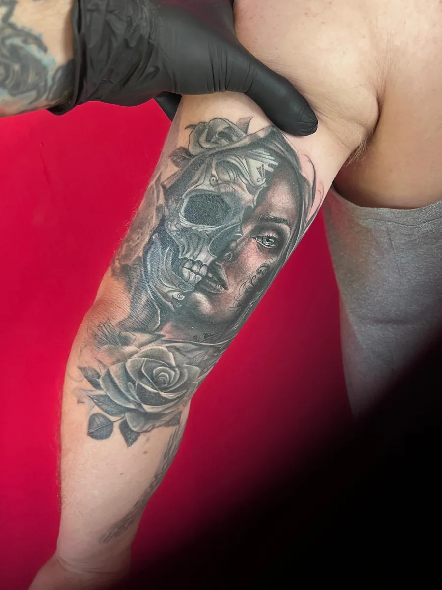
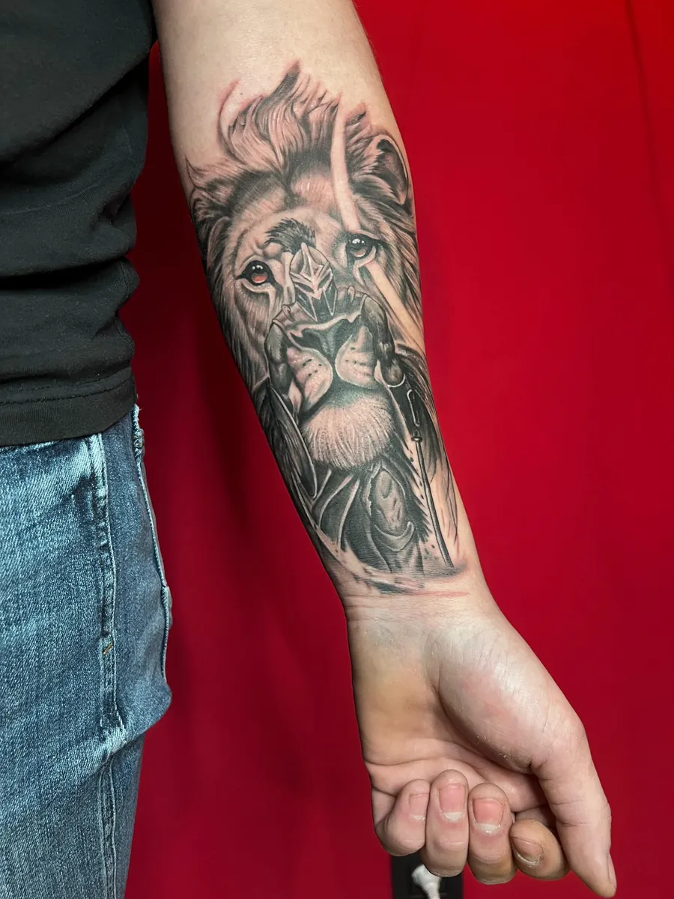
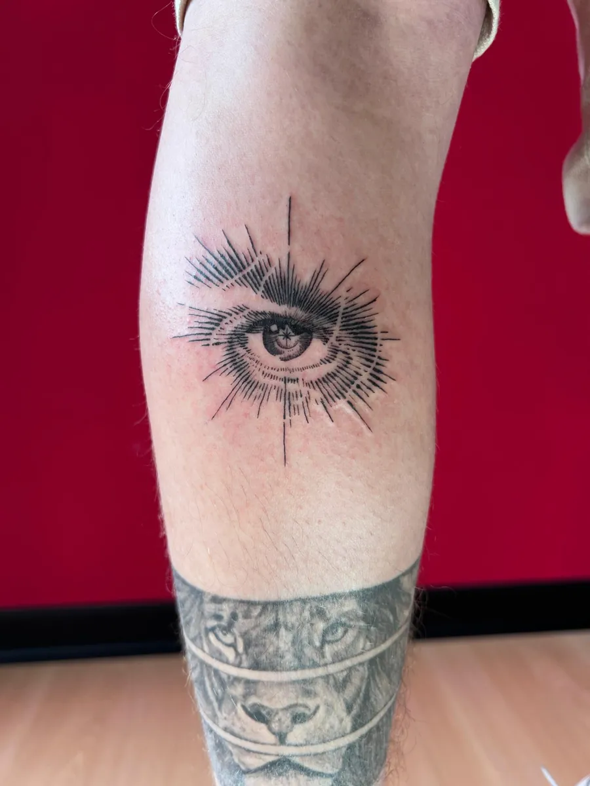
Mijn favoriet blijft black and grey, maar ik sta open voor elke uitdaging. Van een fijne lijn op je pols tot een volledige mouw.
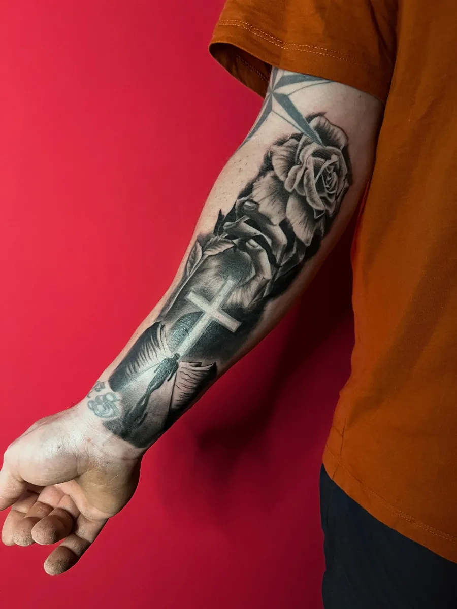
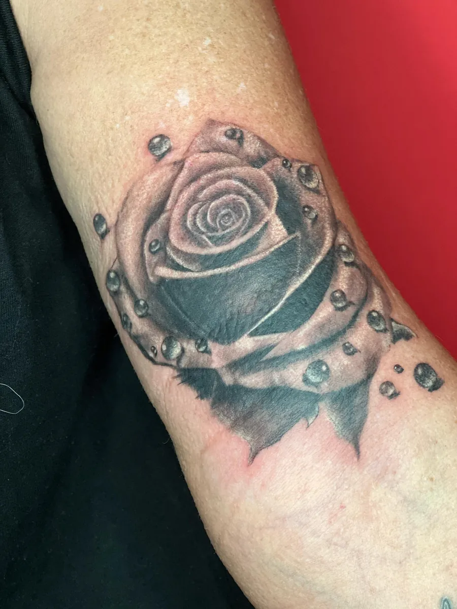
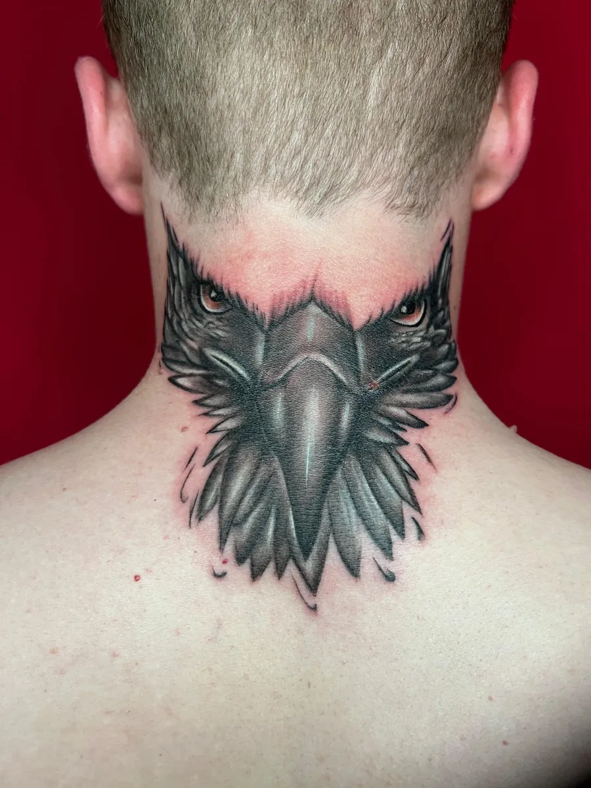
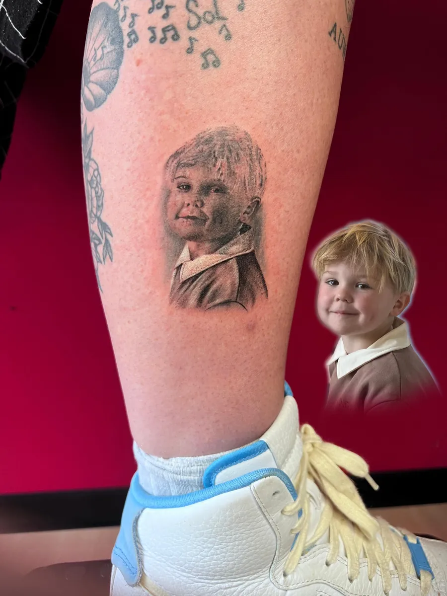
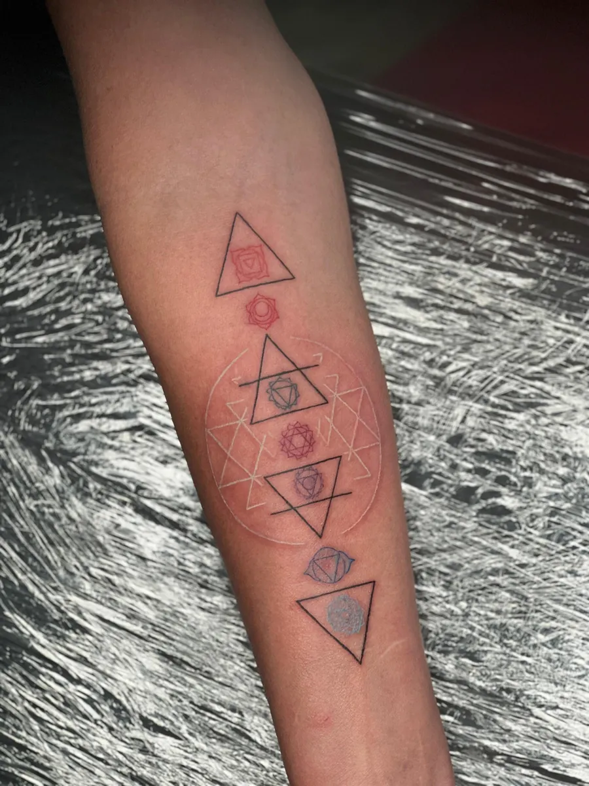
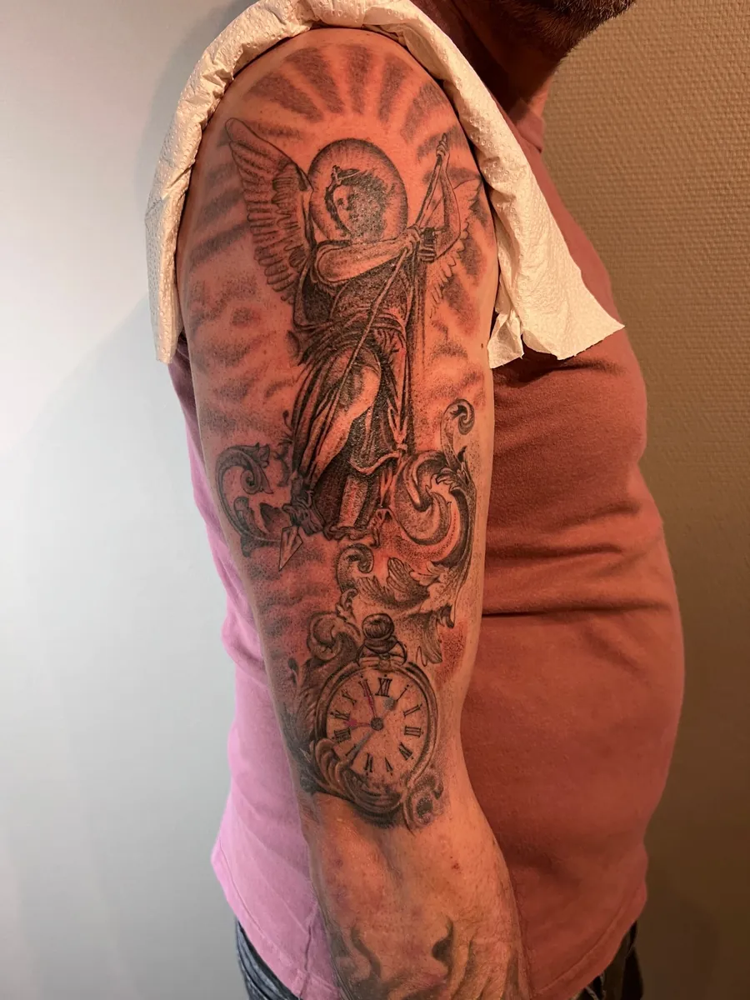
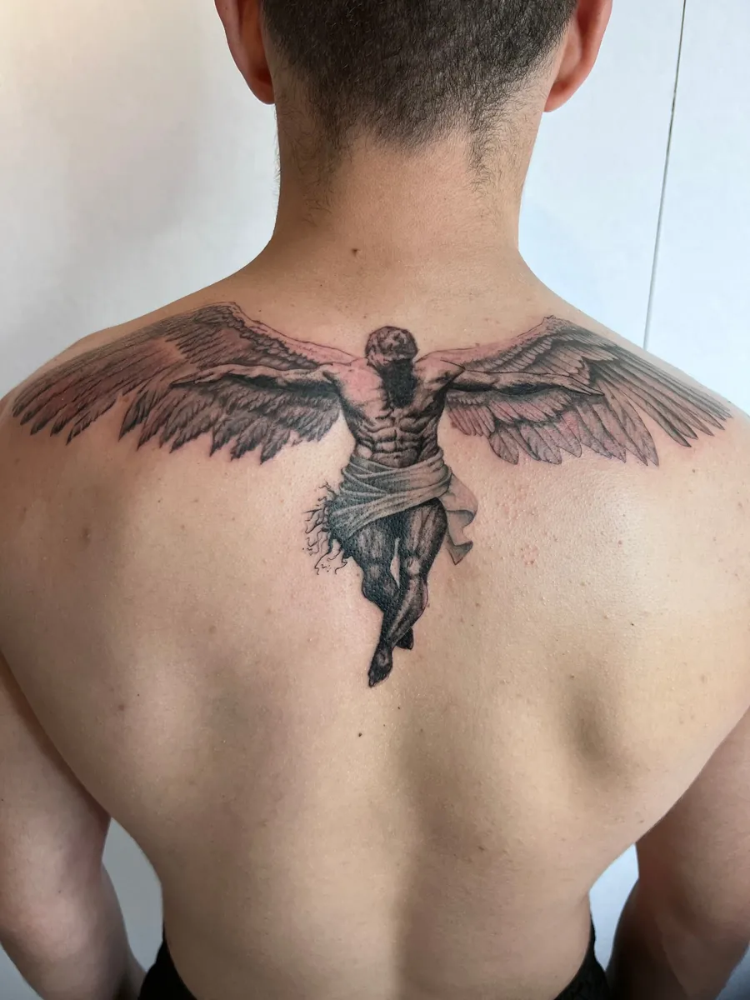
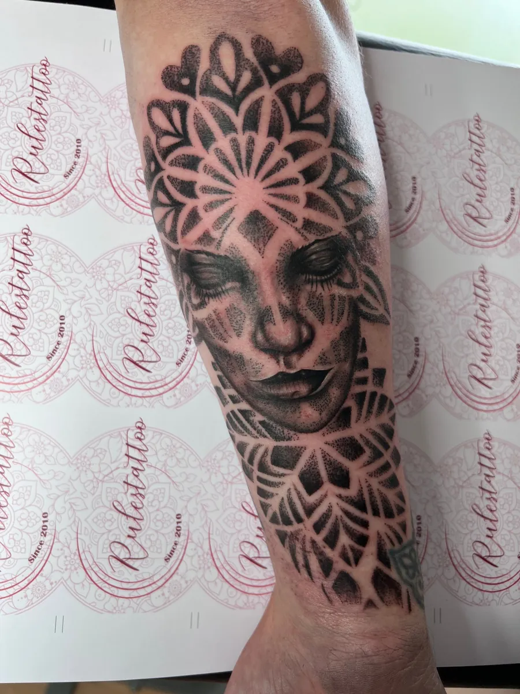
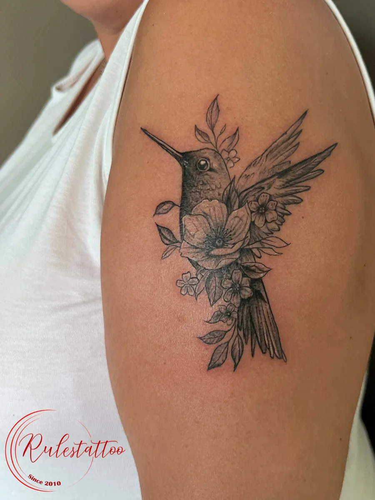
Mijn echte naam is İslam İnanç, maar Ştefan is makkelijker. Ik ben de zoon van een Roemeense moeder en een Turkse vader. Die mix van culturen heeft me gevormd, als mens en als artiest.
Bij Rulestattoo draait alles om jouw idee. Je komt niet binnen voor iets uit een catalogus. We tekenen het samen uit, tot het klopt.
Wat begon als hobby, werd al snel mijn vak toen ik mijn eerste jobaanbod kreeg.
Verschillende tattooshops, onder meer in Bodrum. Elke klant en elke tattoo leerde me iets bij.
Sinds de zomer van 2021 woon ik hier, en kan ik eindelijk weer doen waar mijn hart ligt.
Ik kijk ernaar uit om samen met jou iets moois te maken.
Zo weet je vooraf precies waar je aan toe bent.
Zo heb ik alle tijd voor jou en je ontwerp.
Een voorschot bevestigt je afspraak. Eén keer kosteloos verzetten kan, als je het me minstens een week vooraf laat weten.
Betalen gebeurt cash, ter plaatse.
Je parkeert gratis voor de deur.
Minderjarigen worden niet getattoeëerd, ook niet met toestemming. Kinderen onder 16 en huisdieren laat je beter thuis.
Voor we starten, vul je een formulier in. Wees eerlijk over allergieën en medische aandoeningen. Bij zwangerschap of borstvoeding tattoo ik niet.
Vul het formulier in, stuur een WhatsApp of mail me. Ik neem zo snel mogelijk contact met je op.
Ik maakte deze demo voor jullie om te tonen wat er kan. Na een kort gesprek maak ik er iets veel persoonlijkers van, helemaal naar jullie wens.
Vrijblijvend. Ik kom langs of we bellen.
Op maat, op jullie eigen domein.
Geen voorschot. Jullie betalen pas als alles klaar is.
Hosting, domeinnaam en kleine wijzigingen, zoals nieuwe openingsuren.
Omdat een voorbeeld meer zegt dan een mail. Zo zien jullie meteen wat er kan, en het kost jullie niets.
Nee. Het gesprek is vrijblijvend. Vinden jullie het niks, dan is het daarmee gedaan.
Na ons gesprek staat jullie site binnen 10 tot 14 dagen online.
Zeker. Jullie domeinnaam kan gewoon blijven, de nieuwe site komt in de plaats van de oude.
Nee, dat doe ik op basis van ons gesprek. Eigen foto's zijn mooi meegenomen, maar niet nodig om te starten.